Archived from https://takeuforward.org/data-structure/serialize-and-deserialize-a-binary-tree/
Problem Statement: Given a Binary Tree, design an algorithm to serialise and deserialise it. There is no restriction on how the serialisation and deserialization takes place. But it needs to be ensured that the serialised binary tree can be deserialized to the original tree structure. Serialisation is the process of translating a data structure or object state into a format that can be stored or transmitted (for example, across a computer network) and reconstructed later. The opposite operation, that is, extracting a data structure from stored information, is deserialization.
Examples
Input:Binary Tree: 1 2 3 -1 -1 4 5
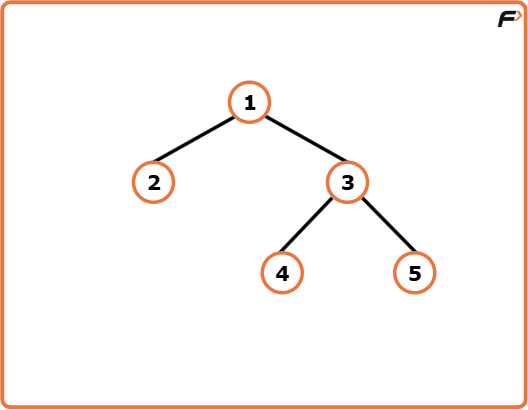
Output:After Serialisation: 1,2,3,#,#,4,5,#,#,#,#, After Deserialization: (Original Tree Back)
Explanation: Any algorithm that compresses this binary tree to a string which can be transmitted and from which the binary tree can be reconstructed later can be used.
Here we have used a serialisation algorithm based on level order traversal where comma separates the nodes and # denotes null nodes.
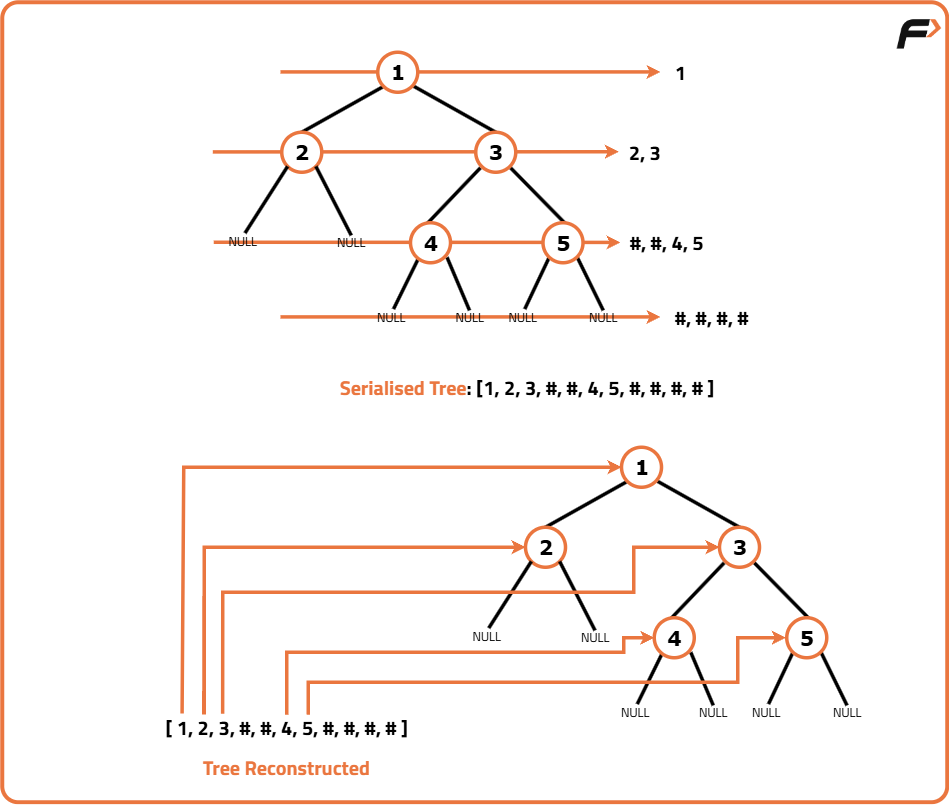
Input:Binary Tree: 1 2 3 -1 4 5 -1
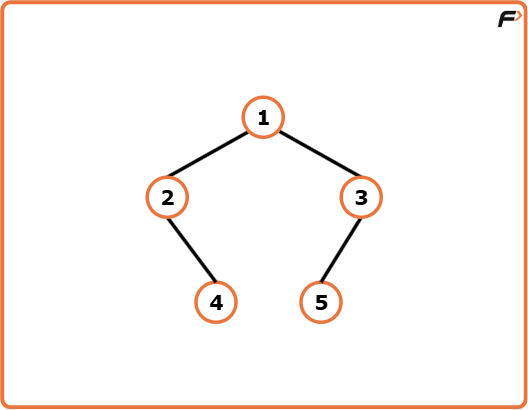
Output :After Serialisation: 1,2,3,#,4,5,#, After Deserialization: (Original Tree Back)
Explanation: Any algorithm that compresses this binary tree to a string which can be transmitted and from which the binary tree can be reconstructed later can be used.
Here we have used a serialisation algorithm based on level order traversal where comma separates the nodes and # denotes null nodes.
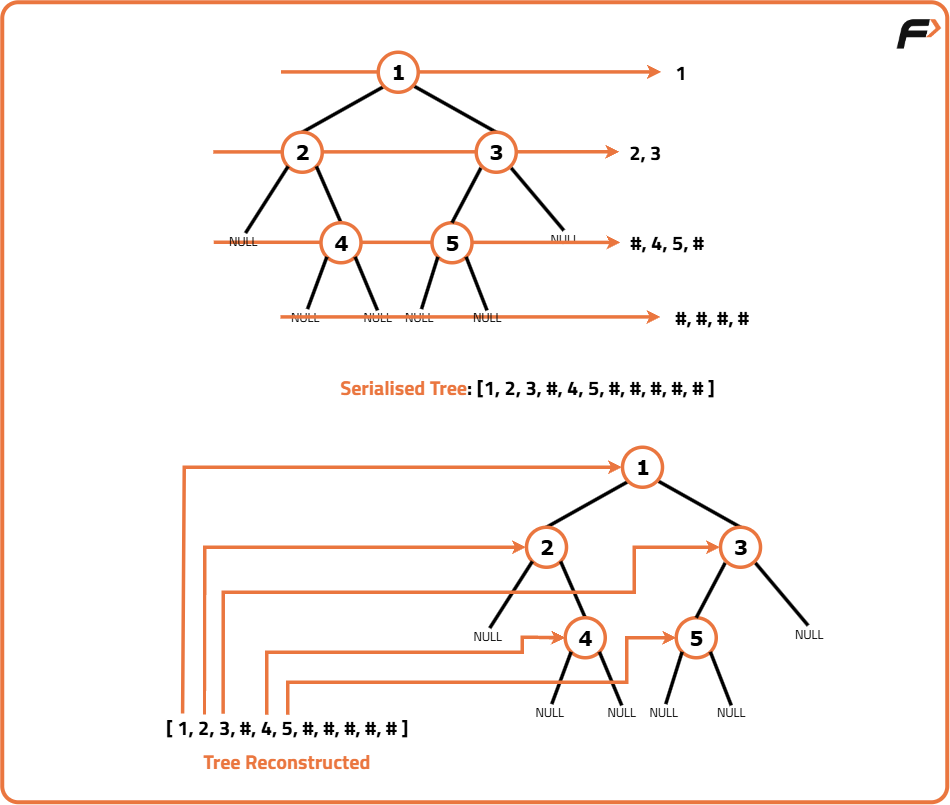
Disclaimer: Here is the practice link to help you assess your knowledge better. It's highly recommend trying to
solve it before looking at the solution.
Approach
Algorithm
Serialisation:
Check if the tree is empty: If the root is null, return an empty string.
Initialise an empty string to store the serialised binary tree.
Use a queue for level-order traversal: initialise a queue and enqueue the root.
Within the level-order traversal loop:
Dequeue a node from the queue.
If the node is null, append "#" to the string.
If the node is not null, append its data value along with a comma (",") as a delimiter. Enqueue its left and right children.
Return the final string containing the serialised representation of the tree.
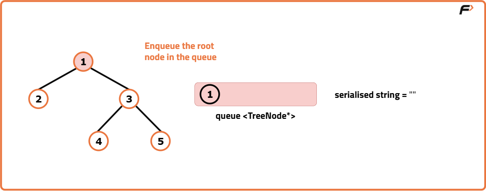
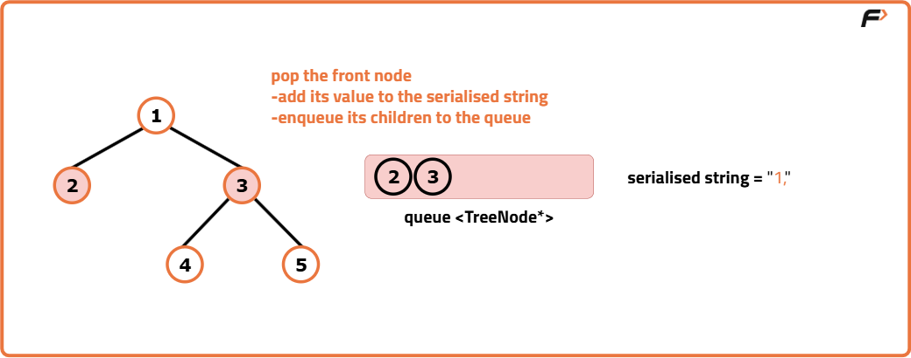
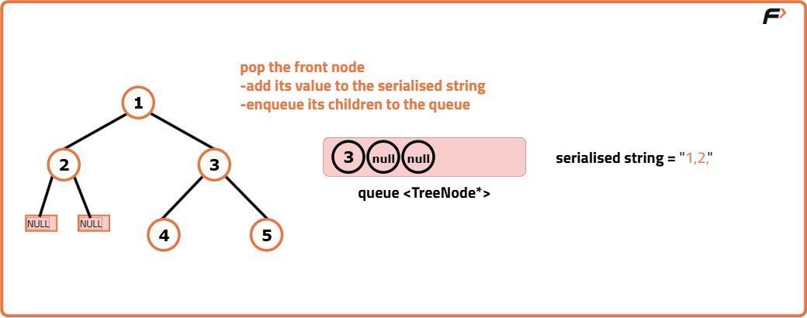
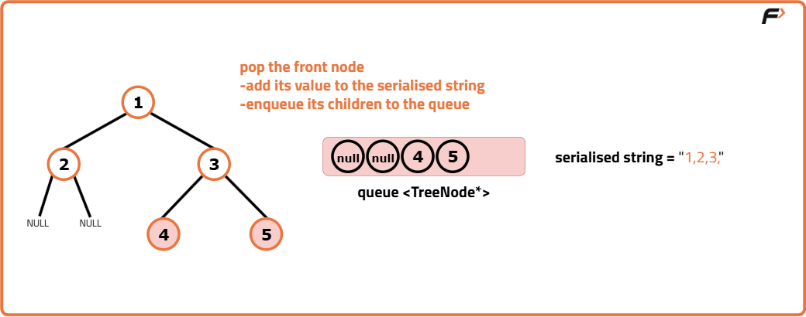
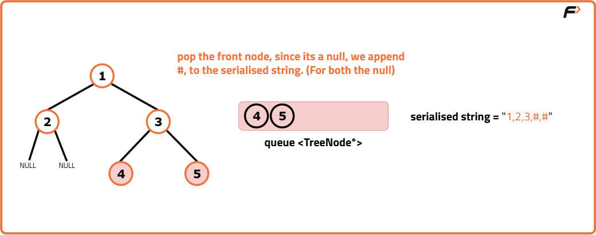
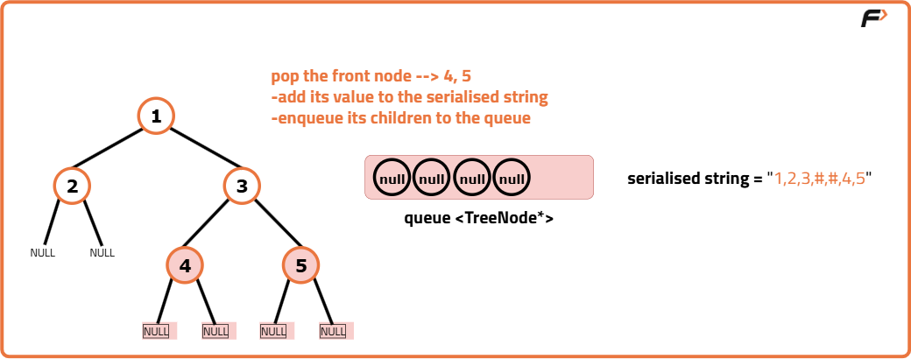
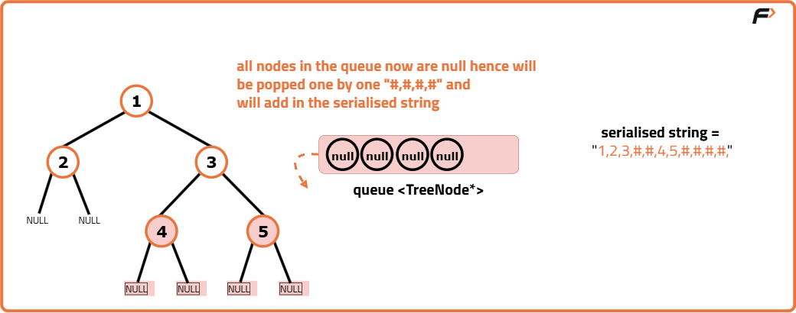
Deserialization:
Check if the serialised data is empty: If it is, return null.
Tokenize the serialised data using a stringstream with comma as a delimiter.
Read the first token and create the root node with this value.
Use a queue for level-order traversal: initialise a queue and enqueue the root.
Within the level-order traversal loop:
Dequeue a node from the queue.
Read the value for the left child.
If it is "#", set the left child to null. Otherwise, create a new node and set it as the left child.
Read the next value for the right child.
If it is "#", set the right child to null. Otherwise, create a new node and set it as the right child.
Enqueue the left and right children into the queue for further traversal.
Return the reconstructed root of the tree.
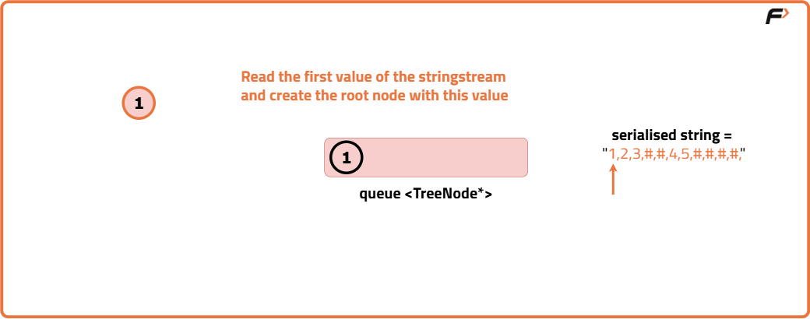
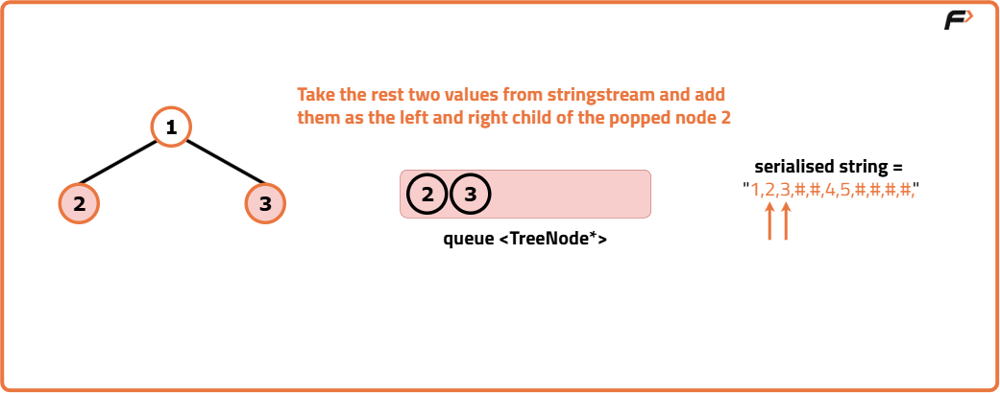
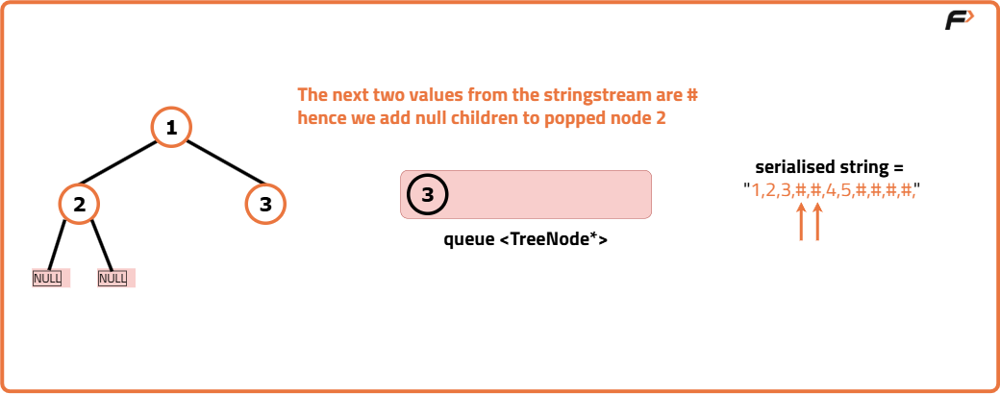
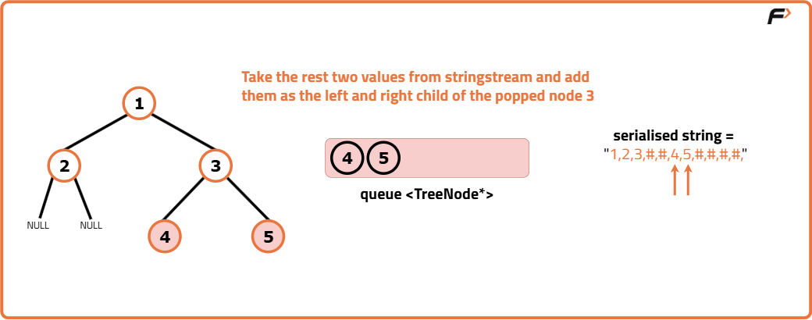
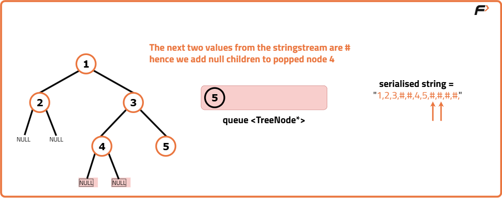
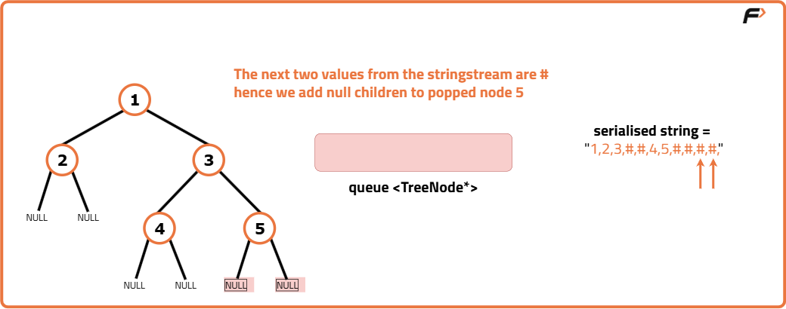
Code
#include <bits/stdc++.h>
using namespace std;
// Definition for a binary tree node
struct TreeNode {
int val;
TreeNode* left;
TreeNode* right;
// Constructor to initialize node value and child pointers
TreeNode(int x) {
val = x;
left = nullptr;
right = nullptr;
}
};
// Function to perform in-order traversal and print the tree
void inorder(TreeNode* root) {
// Base condition: if node is null, return
if (!root) {
return;
}
// Recursively traverse the left subtree
inorder(root->left);
// Print the current node's value
cout << root->val << " ";
// Recursively traverse the right subtree
inorder(root->right);
}
class Solution {
public:
// Function to serialize a binary tree into a string using level-order traversal
string serialize(TreeNode* root) {
// If tree is empty, return an empty string
if (!root) {
return "";
}
// Initialize string to store serialized result
string s = "";
// Initialize a queue to store nodes during level-order traversal
queue<TreeNode*> q;
// Push root node into the queue
q.push(root);
// Loop while queue is not empty
while (!q.empty()) {
// Get the current node from the front of the queue
TreeNode* curNode = q.front();
q.pop();
// If current node is null, append "#" to string
if (curNode == nullptr) {
s += "#,";
}
else {
// Append node value to string
s += to_string(curNode->val) + ",";
// Push left child into queue
q.push(curNode->left);
// Push right child into queue
q.push(curNode->right);
}
}
// Return the serialized tree string
return s;
}
// Function to deserialize a string and reconstruct the binary tree
TreeNode* deserialize(string data) {
// If data is empty, return null
if (data.empty()) {
return nullptr;
}
// Use stringstream to parse the input data
stringstream s(data);
string str;
// Read the root value from the stream
getline(s, str, ',');
// Create the root node
TreeNode* root = new TreeNode(stoi(str));
// Initialize a queue to hold tree nodes for level-order reconstruction
queue<TreeNode*> q;
// Push root node into the queue
q.push(root);
// Loop through the stream to construct the tree
while (!q.empty()) {
// Get the current node from the front of the queue
TreeNode* node = q.front();
q.pop();
// Read the left child value
getline(s, str, ',');
// If value is not "#", create left node and attach to current node
if (str != "#") {
TreeNode* leftNode = new TreeNode(stoi(str));
node->left = leftNode;
q.push(leftNode);
}
// Read the right child value
getline(s, str, ',');
// If value is not "#", create right node and attach to current node
if (str != "#") {
TreeNode* rightNode = new TreeNode(stoi(str));
node->right = rightNode;
q.push(rightNode);
}
}
// Return the root of the reconstructed tree
return root;
}
};
// Driver code
int main() {
// Manually construct the binary tree
TreeNode* root = new TreeNode(1);
root->left = new TreeNode(2);
root->right = new TreeNode(3);
root->right->left = new TreeNode(4);
root->right->right = new TreeNode(5);
// Create an instance of the solution class
Solution solution;
// Print original tree using in-order traversal
cout << "Orignal Tree: ";
inorder(root);
cout << endl;
// Serialize the tree into a string
string serialized = solution.serialize(root);
cout << "Serialized: " << serialized << endl;
// Deserialize the string back into a tree
TreeNode* deserialized = solution.deserialize(serialized);
// Print tree after deserialization
cout << "Tree after deserialisation: ";
inorder(deserialized);
cout << endl;
return 0;
}
import java.util.*;
// Definition for a binary tree node
class TreeNode {
int val;
TreeNode left;
TreeNode right;
// Constructor to initialize node value and child pointers
TreeNode(int x) {
val = x;
left = null;
right = null;
}
}
class Solution {
// Function to serialize a binary tree into a string using level-order traversal
public String serialize(TreeNode root) {
// If tree is empty, return an empty string
if (root == null) return "";
// Initialize string to store serialized result
StringBuilder s = new StringBuilder();
// Initialize a queue to store nodes during level-order traversal
Queue<TreeNode> q = new LinkedList<>();
// Push root node into the queue
q.offer(root);
// Loop while queue is not empty
while (!q.isEmpty()) {
// Get the current node from the front of the queue
TreeNode curNode = q.poll();
// If current node is null, append "#" to string
if (curNode == null) {
s.append("#,");
} else {
// Append node value to string
s.append(curNode.val).append(",");
// Push left child into queue
q.offer(curNode.left);
// Push right child into queue
q.offer(curNode.right);
}
}
// Return the serialized tree string
return s.toString();
}
// Function to deserialize a string and reconstruct the binary tree
public TreeNode deserialize(String data) {
// If data is empty, return null
if (data.isEmpty()) return null;
// Use string splitting to parse the input data
String[] values = data.split(",");
// Create the root node
TreeNode root = new TreeNode(Integer.parseInt(values[0]));
// Initialize a queue to hold tree nodes for level-order reconstruction
Queue<TreeNode> q = new LinkedList<>();
// Push root node into the queue
q.offer(root);
// Index for navigating the value array
int i = 1;
// Loop through the array to construct the tree
while (!q.isEmpty() && i < values.length) {
// Get the current node from the front of the queue
TreeNode node = q.poll();
// Read the left child value
if (!values[i].equals("#")) {
TreeNode leftNode = new TreeNode(Integer.parseInt(values[i]));
node.left = leftNode;
q.offer(leftNode);
}
i++;
// Read the right child value
if (!values[i].equals("#")) {
TreeNode rightNode = new TreeNode(Integer.parseInt(values[i]));
node.right = rightNode;
q.offer(rightNode);
}
i++;
}
// Return the root of the reconstructed tree
return root;
}
// Function to perform in-order traversal and print the tree
public void inorder(TreeNode root) {
if (root == null) return;
inorder(root.left);
System.out.print(root.val + " ");
inorder(root.right);
}
}
// Driver code
class Main {
public static void main(String[] args) {
// Manually construct the binary tree
TreeNode root = new TreeNode(1);
root.left = new TreeNode(2);
root.right = new TreeNode(3);
root.right.left = new TreeNode(4);
root.right.right = new TreeNode(5);
// Create an instance of the solution class
Solution solution = new Solution();
// Print original tree using in-order traversal
System.out.print("Orignal Tree: ");
solution.inorder(root);
System.out.println();
// Serialize the tree into a string
String serialized = solution.serialize(root);
System.out.println("Serialized: " + serialized);
// Deserialize the string back into a tree
TreeNode deserialized = solution.deserialize(serialized);
// Print tree after deserialization
System.out.print("Tree after deserialisation: ");
solution.inorder(deserialized);
System.out.println();
}
}
from collections import deque
# Function to perform in-order traversal and print the tree
def inorder(root):
if not root:
return
inorder(root.left)
print(root.val, end=" ")
inorder(root.right)
# Definition for a binary tree node
class TreeNode:
def __init__(self, x):
self.val = x
self.left = None
self.right = None
class Solution:
# Function to serialize a binary tree into a string using level-order traversal
def serialize(self, root):
# If tree is empty, return empty string
if not root:
return ""
# Initialize result string
result = ""
# Initialize queue for level-order traversal
q = deque()
q.append(root)
# Traverse the tree
while q:
cur_node = q.popleft()
if cur_node is None:
result += "#,"
else:
result += str(cur_node.val) + ","
q.append(cur_node.left)
q.append(cur_node.right)
# Return serialized string
return result
# Function to deserialize string to binary tree
def deserialize(self, data):
# If data is empty, return None
if not data:
return None
# Split the string into node values
nodes = data.split(",")
# Create root node
root = TreeNode(int(nodes[0]))
# Queue to hold nodes while reconstructing
q = deque()
q.append(root)
# Index to iterate node values
i = 1
# Loop through node values
while q and i < len(nodes) - 1:
current = q.popleft()
# Process left child
if nodes[i] != "#":
left = TreeNode(int(nodes[i]))
current.left = left
q.append(left)
i += 1
# Process right child
if nodes[i] != "#":
right = TreeNode(int(nodes[i]))
current.right = right
q.append(right)
i += 1
# Return reconstructed root
return root
# Driver code
if __name__ == "__main__":
# Manually create the binary tree
root = TreeNode(1)
root.left = TreeNode(2)
root.right = TreeNode(3)
root.right.left = TreeNode(4)
root.right.right = TreeNode(5)
# Create object of Solution
solution = Solution()
# Print original tree
print("Orignal Tree: ", end="")
inorder(root)
print()
# Serialize the tree
serialized = solution.serialize(root)
print("Serialized:", serialized)
# Deserialize the tree
deserialized = solution.deserialize(serialized)
print("Tree after deserialisation: ", end="")
inorder(deserialized)
print()
// Definition for a binary tree node
class TreeNode {
constructor(x) {
this.val = x;
this.left = null;
this.right = null;
}
}
// Function to perform in-order traversal and print the tree
function inorder(root) {
if (!root) return;
inorder(root.left);
process.stdout.write(root.val + " ");
inorder(root.right);
}
class Solution {
// Function to serialize a binary tree into a string using level-order traversal
serialize(root) {
if (!root) return "";
let result = "";
let queue = [root];
while (queue.length > 0) {
let node = queue.shift();
if (!node) {
result += "#,";
} else {
result += node.val + ",";
queue.push(node.left);
queue.push(node.right);
}
}
return result;
}
// Function to deserialize a string into a binary tree
deserialize(data) {
if (!data) return null;
let nodes = data.split(",");
let root = new TreeNode(parseInt(nodes[0]));
let queue = [root];
let i = 1;
while (queue.length > 0 && i < nodes.length - 1) {
let current = queue.shift();
if (nodes[i] !== "#") {
let left = new TreeNode(parseInt(nodes[i]));
current.left = left;
queue.push(left);
}
i++;
if (nodes[i] !== "#") {
let right = new TreeNode(parseInt(nodes[i]));
current.right = right;
queue.push(right);
}
i++;
}
return root;
}
}
// Driver code
(function () {
let root = new TreeNode(1);
root.left = new TreeNode(2);
root.right = new TreeNode(3);
root.right.left = new TreeNode(4);
root.right.right = new TreeNode(5);
let solution = new Solution();
process.stdout.write("Orignal Tree: ");
inorder(root);
console.log();
let serialized = solution.serialize(root);
console.log("Serialized:", serialized);
let deserialized = solution.deserialize(serialized);
process.stdout.write("Tree after deserialisation: ");
inorder(deserialized);
console.log();
})();
Complexity Analysis
Time Complexity: O(N)
serialize function: O(N), where N is the number of nodes in the tree. This is because the function performs a level-order traversal of the tree, visiting each node once.
deserialize function: O(N), where N is the number of nodes in the tree. Similar to the serialize function, it processes each node once while reconstructing the tree.
Space Complexity: O(N)
serialize function: O(N), where N is the maximum number of nodes at any level in the tree. In the worst case, the queue can hold all nodes at the last level of the tree.
deserialize function: O(N), where N is the maximum number of nodes at any level in the tree. The queue is used to store nodes during the reconstruction process, and in the worst case, it may hold all nodes at the last level.